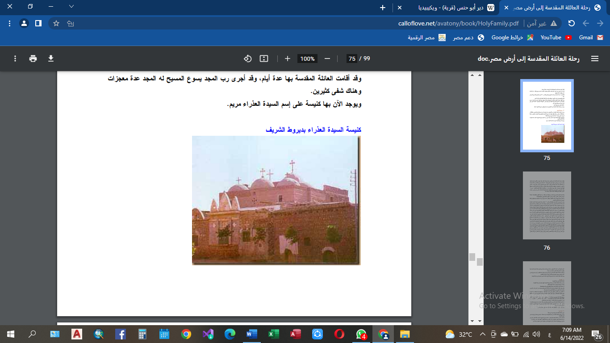

بعد أن إرتحلت العائلة المقدسة من الأشمونين سارت جنوباً إلى أن وصلت قرية فيلـيس وحالياً يطلق عليها إسم ديروط الشريف وتقع ديروط الشريف او فيليس سـابقاً فى البر الغربى وتبعد ٥ كم شمال غربى ديروط المحطة وقد أقامت العائلة المقدسة بها عدة أيام، وقد أجرى رب المجد يسوع المسيح له المجد عدة معجزات وهناك شفى كثيرين ويوجد الآن بها كنيسة على إسم السيدة العذراء مريم ، و تضم المنطقه عدد من الكنائس الاثريه واحده للسيدة العـذراء مـريم وكنيسة للقديس مار جرجس خارج المدينة وثالثة للملاك ميخائيل وللملاك كنيسة أخرى فـى داخـل المدينة.
ولم تطل مدة إقامة العائلة المقدسة فى ديروط غير أياماً، وتذكر كتب التقليد ان الرب يسـوع أجـرى آيات وعجائب ومعجزات فيها وشفى كثيرين ولكن لم تذكرها بالتفصيل.
وبعد إقامة العائلة المقدسة عدة أيام بديروط أكملت المسيرة جنوباً حتى مدينة القوصية.

كنيسه السيده العذراء بديروط